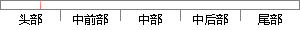

Python是一种面向对象的解释型计算机程序设计语言，由荷兰人Guido van Rossum于1989年发明，第一个公开发行版发行于1991年。
片段位置图

相似结果|
相似片段 1：强大的库函数，很多方法都是异曲同工。它作为是一种面向对象、解释型计算机程序设计语言，由Guido van Rossum于1989年底发明，第一个公开发行版发行于1991年。2011年1月，它被
相似片段 2：强大的库函数，很多方法都是异曲同工。它作为是一种面向对象、解释型计算机程序设计语言，由Guido van Rossum于1989年底发明，第一个公开发行版发行于1991年。2011年1月，它被
相似片段 3：2.3.4 仿真实验与结果分析Python 是一种解释型、面向对象、动态数据类型的高级程序设计语言，由Guido van Rossum 于 1989 年底发明，第一个公开发行版发行于 1991 年
相似片段 4：3.4.1 Python语言Python 语言是一种面向对象的语言，也是一种解释型的编程语言。Python 语言由Guido van Rossum于 1989 年发明，第一个公开发行版发行于 1991 年
相似片段 5：面向对象、直译式计算机程序设计语言，由 Guido van Rossum于1989年底发明，第一个公开发行版发行于 1991年。Python具有简单、易学、免19费、开源、解释性、可移植、可扩展、可
相似片段 6：、功能强大、容易掌握的面向对象的程序设计语言，由 Guido van Rossum 于 1989年底发明的，在 1991 年第一个公开发行版正式出现。现如今，国外的一些知名高校已经开始采用 Python
相似片段 7：程序设计语言，由 Guido van Rossum于 1989 年底发明，第一个公开发行版发行于 1991 年。Python 语法简洁而清晰，具有丰富和强大的类库。它常被昵称为胶水语言，能够把用其他语言制作的各种模块（尤其是 C/C++）很轻松地联结在一起 [29] 。
相似片段 8：2.1 示教器编程语言简介本示教器软件开发选择 Python脚本语言作为主要的开发语言。Python是一种面向对象、解释型计算机程序设计语言，由 Guido van Rossum于 1989年发明
|
※ 片段修改建议 ※
近似词参考：- 对象：工具
- 解释：诠释 注释 表明
- 发明：发现
- 公开：公然
- 发行：刊行
系统自动生成语句：Python是一种面向工具的诠释型计算机程序设计语言，由荷兰人Guido van Rossum于1989年发现，第一个公然刊行版刊行于1991年。
注：本片段修改建议为系统自动生成，仅供参考。